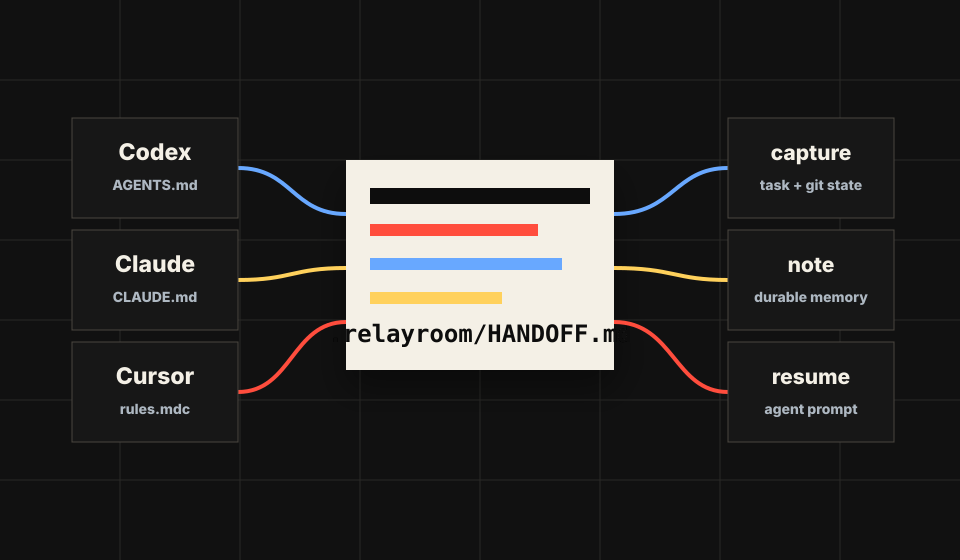

Claude Code
captures the work
For developers switching AI tools mid-build
Carry the task, decisions, git state, and next steps between Claude Code, Cursor, Codex, and whatever you open next.
captures the work
writes the handoff
resumes with context
$ relayroom capture --task "OAuth callback"
updated .relayroom/HANDOFF.md
$ relayroom resume codex --printThe transfer protocol

Snapshot the task note, git branch, working-tree state, recent commits, and durable project notes.
Install small adapter blocks into the context files each coding tool already reads.
Print or copy an agent-specific prompt that starts with the current handoff.
No vendor API required
Relayroom stays local-first and plain-text. The source of truth lives in the repo so it can move with your branch, your PR, and your next tool.
npm install -g github:toyeshhm/relayroom
relayroom init
relayroom adapters installDurable notes sit beside generated handoffs, so decisions stay separate from momentary task state.
Codex, Claude Code, and Cursor each get their native context file pointed at one shared room.
Captures use status, diff stats, commits, and your notes. Raw diffs and secrets stay out.
Documentation included
Open the docs for installation, adapter setup, team usage, safety notes, and exact commands. Run npm run start:site to serve everything locally.